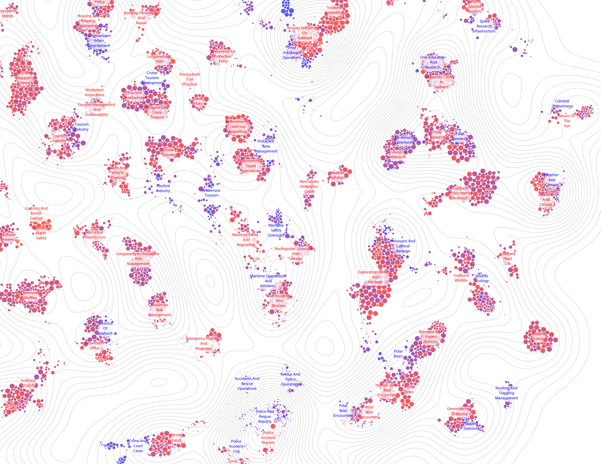

Artwork
An Archive in Conversation: Connecting Public Discourse to Collective Memory
How can a community explore decades of public discourse, and what emerges when people bring situated knowledge to its interpretation? An Archive in Conversation explores the relationship between computational representations of public discourse, situated knowledge, and collective memory in Longyearbyen, a small Arctic settlement in Svalbard, Norway. The project transforms more than 16,700 articles published in Svalbardposten, Longyearbyen's local newspaper, between 2006 and 2024 into an interactive visual landscape. Through computational text analysis, articles are organized according to semantic relationships and represented as clusters within a topographic map. The visualization makes nearly two decades of recorded public discourse accessible for exploration, revealing thematic patterns and relationships that are difficult to perceive through conventional archival reading. Earlier this year, the visualization became the basis for a participatory workshop in Longyearbyen. Participants explored the digital interface and a large printed map, annotating patterns they recognized, questioning computational groupings, proposing alternative connections, and introducing historical and contextual knowledge. These interventions revealed productive tensions between computational and situated interpretations. Participants questioned, for example, why community commentary appeared at the margins of the map while institutional topics occupied more central positions. Others proposed connections between cultural events and community traditions or raised questions about the visibility of international residents. Rather than simply validating or correcting the computational representation, participants contributed different ways of understanding the relationships, histories, and experiences represented in the archive. For VISAP 2026, the project brings these perspectives together in a physical and digital installation. A large printed archival map incorporates participants' annotations through visual encodings. Physical flip cards invite visitors to encounter the original observations, questions, and interpretations associated with specific areas of the map. Workshop photographs reveal the participatory process, while the interactive digital visualization allows visitors to explore the underlying archive. The installation responds to the theme of Amplification through three interconnected dimensions. It amplifies the archive by transforming recorded discourse into an explorable landscape; amplifies community interpretation by making situated knowledge visible alongside computational relationships; and explores the potential to amplify collective memory by creating opportunities for shared reflection on how a place is represented, remembered, and understood. The work proposes archival visualization not as a definitive representation of community history, but as a shared object of inquiry. Through recognition, questioning, reconnection, and the contribution of new perspectives, the archive becomes something people can think and remember with—a space where multiple interpretations may encounter one another and where collective understandings of the past can be negotiated and reshaped. Situated at the intersection of information design, computational text analysis, network visualization, digital humanities, and participatory design, the project examines how visual representations can support collective sense-making without reducing community knowledge to computational patterns. The work builds on a participatory workshop held in Longyearbyen in 2026. The VISAP installation extends this experience to an audience unfamiliar with the town, inviting visitors to discover how participants interpreted the archive and reconsidered the relationships made visible through computational analysis.

This visualization maps the Svalbardposten archive to show the debates that have shaped the local community in the last two decades. Each dot is an article: its size shows the article’s length, and its color shows when it was published, from blue for older to red for recent. Clusters that run red are heating up; those that run blue are cooling. Dots are placed by semantic similarity, so articles gather into thematic clusters that allow a distant reading of the archive.